tbee package¶
tbee.lattice module¶
-
class
tbee.lattice.lattice(unit_cell, prim_vec)[source]¶ Bases:
objectBuild up 1D or 2D lattice. Lattice is defined by the discrete operation:
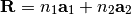
where 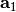 and 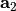 are the two primitive vectors and 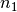 and 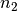 are the number of unit cells along and .
Parameters: - unit_cell –
List of dictionaries. One dictionary per site within the unit cell. Each dictionary has two keys:
- ‘tag’, Binary Char. label of the associated sublattice.
- ‘r0’, Tuple. Position.
- prim_vec –
List of tuples. Define the primitive vectors. List of one/two tuples for 1D/2D respectively:
- Tuple, cartesian coordinate of the primitive vector .
- Tuple, cartesian coordinate of the primitive vector .
Example usage:
# Line-Centered Square lattice unit_cell = [{'tag': b'a', r0=(0., 0.)}, {'tag': b'a', r0=(0., 1.)}] prim_vec = [(0, 2), (2, 0)] lat = lattice(unit_cell=unit_cell, prim_vec=prim_vec)-
get_lattice(n1, n2=1)[source]¶ Get the lattice positions.
Parameters: - n1 – Positive Integer. Number of unit cells along .
- n2 – Positive Integer. Default value 1. Number of unit cells along .
Example usage:
# Line-Centered Square lattice unit_cell = [{'tag': b'a', r0=(0., 0.)}, {'tag': b'a', r0=(0., 1.)}] prim_vec = [(0, 2), (2, 0)] lat = lattice(unit_cell=unit_cell, prim_vec=prim_vec) lat.get_lattice(n1=4, n2=5)
-
add_sites(coor)[source]¶ Add sites.
Parameters: coor – Structured array with keys: {‘x’, ‘y’, ‘tag’}. Example usage:
# Square lattice unit_cell = [{'tag': b'a', r0=(0., 0.)}] prim_vec = [(0, 1), (1, 0)] lat = lattice(unit_cell=unit_cell, prim_vec=prim_vec) lat.get_lattice(n1=2, n2=2) coor = np.array([(-1., -1, b'b'), (-2., -2, b'c')], dtype=[('x', 'f8'), ('y', 'f8'), ('tag', 'S1')]) lat.add_sites(coor)
-
remove_sites(index)[source]¶ Remove sites defined by their indices (use method lattice.plot(plt_index=True) to get access to the site indices).
Parameters: index – List. Site indices to be removed. Example usage:
# Square lattice unit_cell = [{'tag': b'a', r0=(0., 0.)}] prim_vec = [(0, 1), (1, 0)] lat = lattice(unit_cell=unit_cell, prim_vec=prim_vec) lat.get_lattice(n1=2, n2=2) lat.remove_sites([0, 2])
-
shift_y(shift)[source]¶ Shift by delta_x the x coordinates.
Parameters: shift – Real number. Shift value.
-
boundary_line(cx, cy, co)[source]¶ Select sites according to 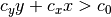.
Parameters: - cx – Real number. cx value.
- cy – Real number. cy value.
- co – Real number. co value.
-
ellipse_in(rx, ry, x0, y0)[source]¶ Select sites according to
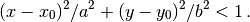
Parameters: - list_hop – List of Dictionary (see set_hopping definition).
- rx – Positive Real number. Radius along
 .
. - ry – Positive Real number. Radius along
 .
. - x0 – Real number. center.
- y0 – Real number. center.
-
ellipse_out(rx, ry, x0, y0)[source]¶ Select sites according to
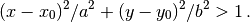
Parameters: - list_hop – List of Dictionary (see set_hopping definition).
- rx – Positive Real number. Radius along .
- ry – Positive Real number. Radius along .
- x0 – Real number. center.
- y0 – Real number. center.
-
rotation(theta)[source]¶ Rotate the lattice structure by the angle
 .
.Parameters: theta – Rotation angle in degrees.
-
plot(ms=20, fs=20, plt_index=False, axis=False, figsize=None)[source]¶ Plot lattice in hopping space.
Parameters: - ms – Positive number. Default value 20. Markersize.
- fs – Positve number. Default value 20. Fontsize.
- plt_index – Boolean. Default value False. Plot site labels.
- axis – Boolean. Default value False. Plot axis.
- figsize – Tuple. Default value None. Figsize.
Returns: - fig – Figure.
- unit_cell –
tbee.system module¶
-
class
tbee.system.system(lat)[source]¶ Bases:
objectSolve the Tight-Binding eigenvalue problem of a lattice defined by the class lattice.
Parameters: lat – lattice class instance. -
print_distances(n=1)[source]¶ Print distances and positive angles (in degrees) 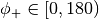 of the nth shortest edges. Negative angles are given by: 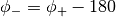 and 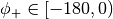.
Parameters: n – Positive integer. Number of shortest edges.
-
set_onsite(dict_onsite)[source]¶ Set onsite energies.
Parameters: on – Array. Sublattice onsite energies. Example usage:
# Line-Centered Square lattice sys.set_onsite({b'a': -1j, {b'b':, -2j}})
-
fill_store_hop(n)[source]¶ Private method.
Store in store_hop indices (with 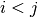), positive angles, tags (up and low) of a given type of hopping.
-
set_hopping(list_hop, low=False)[source]¶ Set lattice hoppings.
Parameters: - list_hop –
List of Dictionaries. Dictionary with keys (‘n’, ‘ang’, ‘tag’, ‘t’) where:
- ‘n’ Positive integer, type of hoppings:
- ‘n’: 1 for nearest neighbours.
- ‘n’: 2 for next-nearest neighbours.
- ‘n’: 3 for next-next-nearest neighbours.
- etc...
- ‘ang’ value, float, angle, in deg, of the hoppings. (optional).Hopping angles are given by the method print_distances.
- If
 , fill the Hamiltonian diagonal up.
, fill the Hamiltonian diagonal up. - If 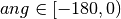, fill the Hamiltonian diagonal low.
- If
- ‘tag’ binary string of length 2 (optional).Hopping tags.
- ‘t’ Complex number.Hopping value.
- ‘n’ Positive integer, type of hoppings:
- low –
Boolean. Default value False.
- True get hoppings with (
 ) i.e. fill the Hamiltonian lower part.
) i.e. fill the Hamiltonian lower part. - False get hoppings with (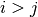) i.e. fill the Hamiltonian upper part.
- True get hoppings with (
Example usage:
# fill upper part: sys.set_hopping([{'n': 1, t: 1.}]) # fill lower part: sys.set_hopping([{'n': 1, t: 1.}], low=True) # fill upper part: specifying the angles: sys.set_hopping([{'n': 1, 'ang': 0., t: 1.}, {'n': 1, 'ang': 90, t: 2.}]) # fill lower part: sys.set_hopping([{'n': 1, 'ang': -180., t: 1.}, {'n': 1, 'ang': -90, t: 2.}], low=True) # fill upper part: specifying the tags: sys.set_hopping([{'n': 1, 'tag': b'ab', t: 1.}, {'n': 1, 'tag': b'ba', t: 2.}]) # fill lower part: sys.set_hopping([{'n': 1, 'tag': b'ab', t: 1.}, {'n': 1, 'tag': b'ba', t: 2.}], low=True) # fill upper part: specifying the angles and tags: sys.set_hopping([{'n': 1, 'ang': 0., 'tag': b'ab', t: 1.}, {'n': 1, 'ang': 0., 'tag': b'ba', t: 2.}, {'n': 1, 'ang': 90., 'tag': b'ab', t: 3.}, {'n': 1, 'ang': 90., 'tag': b'ba', t: 4.}]) # fill lower part: sys.set_hopping([{'n': 1, 'ang': 0., 'tag': b'ab', t: 1.}, {'n': 1, 'ang': 0., 'tag': b'ba', t: 2.}, {'n': 1, 'ang': 90., 'tag': b'ab', t: 3.}, {'n': 1, 'ang': 90., 'tag': b'ba', t: 4.}]), low=True)Note
A Hermitian hopping matrix can be build-up only using its upper part OR only using its lower part. The full matrix is then automatic built by Hermitian conjugaison.
If both upper AND lower parts are used to build up the hopping matrix. non Hermitian conjugaison is not performed i.e. non-Hermitian hopping matrix can be built.
- list_hop –
-
check_sites()[source]¶ Private method. Check if the number of sites was changed after calling the method system.set_hopping().
-
set_given_hopping(n, size, dic, mask, low)[source]¶ Private method. Fill self.hop.
Parameters: - n – Integer. Hopping type.
- size – Integer. Number of hoppings.
- doc – Dictionary. Hopping dictionary.
- mask – np.ndarray. Mask.
- low – Boolean. If True, self.hop[‘i’] > self.hop[‘j’].
-
set_hopping_manual(dict_hop, low=False)[source]¶ Set hoppings manually.
Parameters: dict_hop – Dictionary of hoppings. key: hopping indices, val: hopping values.
-
set_hopping_dis(alpha)[source]¶ Set uniform hopping disorder.
Parameters: alpha – Complex or Real number. Disorder stength. Example usage:
sys.set_hopping_dis(alpha=0.1)
-
set_onsite_dis(alpha)[source]¶ Set uniform onsite disorder.
Parameters: alpha – Complex or Real number. Disorder stength. Example usage:
sys.set_onsite_dis(alpha=0.1)
-
set_onsite_def(onsite_def)[source]¶ Set specific onsite energies.
Parameters: onsite_def – Dictionary. key: site indices, val: onsite values. Example usage:
set_onsite_def(0: 1., 1: -1j)
-
set_hopping_def(hopping_def)[source]¶ Set specific hoppings.
Parameters: hopping_def – Dictionary of hoppings. key: hopping indices, val: hopping values. Example usage:
sys.set_hopping_def({(0, 1): 1., (1, 2): -1j})
-
set_new_hopping(list_hop, ind)[source]¶ Private method. Set new hoppings.
Parameters: - list_hop – List of Dictionary (see set_hopping definition).
- ind – List. List of indices.
-
find_square(xlims, ylims)[source]¶ Private method. Find hoppings within the square.
Parameters: - xlims – List or Tuple. interval.
- ylims – List or Tuple. interval.
- xlims – List or Tuple.
-
find_ellipse(rx, ry, x0, y0)[source]¶ Private method. Find hoppings within the ellipse.
Parameters: - rx – Positive Float. Radius along .
- ry – Positive Float. Radius along .
- x0 – Float. Defalut value 0. center.
- y0 – Float. Defalut value 0. center.
- rx – Positive Float. Radius along
-
change_hopping_square(list_hop, xlims, ylims=[-1.0, 1.0])[source]¶ Change hopping values.
Parameters: - list_hop – List of Dictionary (see set_hopping definition).
- xlims – List or Tuple. interval.
- ylims – List or Tuple. interval.
-
change_hopping_ellipse(list_hop, rx, ry, x0=0.0, y0=0.0)[source]¶ Change hopping values.
Parameters: - list_hop – List of Dictionary (see set_hopping definition).
- rx – Positive Float. Radius along .
- ry – Positive Float. Radius along .
- x0 – Float. Default value 0. center.
- y0 – Float. Default value 0. center.
-
get_coor_hop()[source]¶ Get the site coordinates in hopping space only considering the nearest neighbours hoppings.
-
get_eig(eigenvec=False, left=False)[source]¶ Get the eigenergies, eigenvectors and polarisation.
Parameters: - eigenvec – Boolean. Default value False. If True, get the eigenvectors.
- left – Boolean. Default value False. If True, get the left eigenvectors too. Relevant for non-Hermitian matrices.
-
get_petermann()[source]¶ Get the Petermann factor:
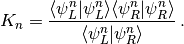
Note
LA.eig fixes the norm such that 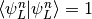 and 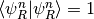.
-
get_intensity_pola_max(tag_pola)[source]¶ Get the state with largest polarization on one sublattice.
Parameters: tag_pola – Binary char. Sublattice tag. Returns: - intensity – Intensity of max polarized state on tag.
-
tbee.plot module¶
-
class
tbee.plot.plot(sys, colors=None)[source]¶ Bases:
objectPlot the results of the classes lattice or system.
Parameters: - sys – class instance system.
- colors – Default value None. Color plot.
-
lattice_generic(coor, ms, lw, c, fs, axis, plt_hop, plt_hop_low, plt_index, figsize)[source]¶ Private method called by lattice and lattice_hop.
-
lattice(ms=20, lw=5.0, c=3.0, fs=20, axis=False, plt_hop=False, plt_hop_low=False, plt_index=False, figsize=None)[source]¶ Plot lattice.
Parameters: - ms – Positive number. Default value 20. Markersize.
- c – Positive number. Default value 3. Coefficient. Hopping linewidths given by c*hop[‘t’].
- fs – Positive number. Default value 20. Fontsize.
- plt_hop – Boolean. Default value False. Plot hoppings.
- plt_hop_low – Boolean. Default value False. Plot hoppings diagonal low.
- plt_index – Boolean. Default value False. Plot site labels.
- axis – Boolean. Default value False. Plot axis.
- figsize – Tuple. Default value None. Figure size.
Returns: - fig – Figure.
-
lattice_hop(ms=20, lw=5, c=3.0, fs=20, axis=False, plt_hop=False, plt_hop_low=False, plt_index=False, figsize=None)[source]¶ Plot lattice in hopping space.
Parameters: - ms – Positive Float. Default value 20. Markersize.
- c – Positive Float. Default value 3. Coefficient. Hopping linewidths given by c*hop[‘t’].
- fs – Positive Float. Default value 20. Fontsize.
- axis – Boolean. Default value False. Plot axis.
- plt_hop – Boolean. Default value False. Plot hoppings.
- plt_index – Boolean. Default value False. Plot site labels.
- figsize – Tuple. Default value None. Figure size.
Returns: - fig – Figure.
-
spectrum_hist(nbr_bins=61, fs=20, lims=None)[source]¶ Plot the spectrum.
Parameters: - nbr_bins – Default value 101. Number of bins of the histogram.
- lims – List, lims[0] energy min, lims[1] energy max.
-
spectrum(ms=10, fs=20, lims=None, tag_pola=None, ipr=None, peterman=None)[source]¶ Plot spectrum (eigenenergies real part (blue circles), and sublattice polarization if pola not empty (red circles).
Parameters: - ms – Default value 10. Markersize.
- fs – Default value 20. Fontsize.
- lims – List, lims[0] energy min, lims[1] energy max.
- tag_pola – Default value None. Binary char. Tag of the sublattice.
- ipr – Default value None. If True plot the Inverse Partitipation Ration.
- petermann – Default value None. If True plot the Petermann factor.
Returns: - fig – Figure.
-
polarization(fig=None, ax1=None, ms=10.0, fs=20.0, lims=None, tag_pola=None, ind=None)[source]¶ Plot sublattice polarization.
Parameters: - fig – Figure. Default value None. (used by the method spectrum).
- ax1 – Axis. Default value None. (used by the method spectrum).
- ms – Positive Float. Default value 10. Markersize.
- fs – Positive Float. Default value 20. Fontsize.
- lims – List, lims[0] energy min, lims[1] energy max.
- tag_pola – Binary char. Default value None. Tag of the sublattice.
- ind – List. Default value None. List of indices. (used in the method spectrum).
Returns: - fig – Figure.
-
ipr(fig=None, ax1=None, ms=10, fs=20, lims=None, ind=None)[source]¶ Plot Inverse Participation Ration.
Parameters: - fig – Figure. Default value None. (used by the method spectrum).
- ax1 – Axis. Default value None. (used by the method spectrum).
- ms – Positive Float. Default value 10. Markersize.
- fs – Positive Float. Default value 20. Fontsize.
- lims – List. lims[0] energy min, lims[1] energy max.
- ind – List. Default value None. List of indices. (used in the method spectrum).
Returns: - fig – Figure.
-
petermann(fig=None, ax1=None, ms=10, fs=20, lims=None, ind=None)[source]¶ Plot Peterman factor.
Parameters: - fig – Figure. Default value None. (used by the method spectrum).
- ax1 – Axis. Default value None. (used by the method spectrum).
- ms – Positive Float. Default value 10. Markersize.
- fs – Positive Float. Default value 20. Fontsize.
- lims – List. lims[0] energy min, lims[1] energy max.
- ind – List. Default value None. List of indices. (used in the method spectrum).
Returns: - fig – Figure.
-
spectrum_complex(ms=10.0, fs=20.0, lims=None)[source]¶ Plot complex value eigenenergies,real part (blue circles), and imaginary part (red circles).
Parameters: - ms – Positive Float. Default value 20. Markersize.
- fs – Positive Float. Default value 20. Font size.
- lims – List. lims[0] energy min, lims[1] energy max.
Returns: - fig – Figure.
-
intensity_1d(intensity, ms=20.0, lw=2.0, fs=20.0, title='$|\\psi^{(j)}|^2$')[source]¶ Plot intensity for 1D lattices.
Parameters: - intensity – np.array. Field intensity.
- ms – Positive Float. Default value 20. Markersize.
- lw – Positive Float. Default value 2. Linewith, connect sublattice sites.
- fs – Positive Float. Default value 20. Font size.
- title – String. Default value ‘Intensity’. Figure title.
-
intensity_disk(intensity, s=200.0, fs=20.0, lims=None, figsize=None, title='$|\\psi|^2$')[source]¶ Plot the intensity. Colormap with identical disk shape.
Parameters: - intensity – np.array.Field intensity.
- s – Default value 200. Disk size.
- fs – Default value 20. Font size.
- lims – List. Default value None. Colormap limits.
- figsize – Tuple. Default value None. Figure size.
- title – String. Default value ‘$|psi_n|^2$’. Title.
Returns: - fig – Figure.
-
intensity_area(intensity, s=1000.0, lw=1.0, fs=20.0, plt_hop=False, figsize=None, title='$|\\psi|^2$')[source]¶ Plot the intensity. Intensity propotional to disk shape.
Parameters: - intensity – np.array. Intensity.
- s – Positive Float. Default value 1000. Circle size given by s * intensity.
- lw – Positive Float. Default value 1. Hopping linewidths.
- fs – Positive Float. Default value 20. Fontsize.
- plt_hop – Boolean. Default value False. Plot hoppings.
- figsize – Tuple. Default value None. Figure size.
- title – String. Default value ‘$|psi_{ij}|^2$’. Figure title.
Returns: - fig – Figure.
-
butterfly(betas, butterfly, lw=1.0, fs=20.0, lims=None, title='')[source]¶ Plot energies depending on a parameter.
Parameters: - betas – np.array. Parameter values.
- butterfly – np.array. Eigenvalues.
- lw – Positive Float. Default value 1. Hopping linewidths.
- fs – Positive Float. Default value 20. Fontsize.
- lims – List, lims[0] energy min, lims[1] energy max.
- title – Default value ‘’. Figure title.
tbee.propagation module¶
-
class
tbee.propagation.propagation(lat)[source]¶ Bases:
objectGet lattice time evolution. Time dependent Schrodinger equation solved by Crank-Nicolson method.
Parameters: lat – lattice class instance. -
get_propagation(ham, psi_init, steps, dz, norm=False)[source]¶ Get the time evolution.
Parameters: - ham – sparse.csr_matrix. Tight-Binding Hamilonian.
- psi_init – np.ndarray. Initial state.
- steps – Positive Integer. Number of steps.
- dz – Positive number. Step.
- norm – Boolean. Default value True. Normalize the norm to 1 at each step.
-
get_pumping(hams, psi_init, steps, dz, norm=True)[source]¶ Get the time evolution with adiabatic pumpings.
Parameters: - hams – List of sparse.csr_matrices. Tight-Binding Hamilonians.
- psi_init – np.ndarray. Initial state.
- steps – Positive integer. Number of steps.
- dz – Positive number. Step.
- norm – Boolean. Default value True. Normalize the norm to 1 at each step.
-
plt_propagation_1d(prop_type='real', fs=20, figsize=None)[source]¶ Plot time evolution for 1D systems.
Parameters: fs – Default value 20. Fontsize.
-
prop_smooth_1d(prop, a=10, no=40)[source]¶ Private function. Used in plt_propagation_1d. Smooth propagation for 1D systems. Perform Gaussian interpolation
 ,
,Parameters: - prop – Propagation.
- a – Default value 15. Gaussian Parameter.
- no – Default value 40. Number of points of each Gaussian.
Returns: - smooth – Smoothed propagation.
-
get_animation(s=300.0, fs=20.0, prop_type='real', figsize=None)[source]¶ Get time evolution animation.
Parameters: - s – Default value 300. Circle size.
- fs – Default value 20. Fontsize.
- figsize – Tuple. Default value None. Figsize.
- prop_type – Default value None. Figsize.
Returns: - ani – Animation.
-
tbee.save module¶
-
class
tbee.save.save(dir_name, dir_main=None, params={}, file_format='png')[source]¶ Bases:
objectCreate folder and save figures / animations obtained via plot or propagation. Plot the results of the classes lattice or system.
Parameters: - dir_main – Name of the directory.
- dir_name – Default value None. Relative path of the main directory. if None, figures stored in ‘’../TBfig/’dir_name/’
- params – dictionary. file name information
- file_format – Default value ‘png’. Figure format.
-
dir_name(dir_name)[source]¶ Set the name of the directory in which the figures are stored.
Parameters: dir_name – String. Directory name.
-
fig(fig, name)[source]¶ Save the figure in the directory defined by the method dir_name().
Parameters: - fig – Matplotlib fig.
- name – String. Fist part of the file name.
tbee.graphene module¶
-
class
tbee.graphene.grapheneLat[source]¶ Bases:
tbee.lattice.lattice-
triangle_zigzag(n)[source]¶ Triangular flake with zigzag terminations.
Param: - Int. Number of plackets along the edges.
-
hexagon_zigzag(n)[source]¶ Hexagonal flake with zigzag terminations.
Param: - Int. Number of plackets along the edges.
-
triangle_armchair(n)[source]¶ Triangular flake with armchair terminations.
Param: - Int. Number of plackets along the edges.
-
-
class
tbee.graphene.grapheneSys(lat)[source]¶ Bases:
tbee.system.system-
set_hop_linear_strain(t, beta)[source]¶ Set nearest neighbors hoppings according to the linear trixial strain.
Parameters: - t – Hopping value without strain.
- beta – Strength of the strain.
-
tbee.error_handling module¶
-
tbee.error_handling.boolean(var, var_name)[source]¶ Check if var is a boolean.
Raises: TypeError – Parameter var must be a bool.
-
tbee.error_handling.positive_int(var, var_name)[source]¶ Check if var is a positive integer.
Raises: - TypeError – Parameter var must be an integer.
- ValueError – Parameter var must be a positive integer.
-
tbee.error_handling.positive_int_lim(var, var_name, nmax)[source]¶ Check if var is a positive integer smaller than nmax.
Raises: - TypeError – Parameter var must be an integer.
- ValueError – Parameter var must be a positive integer.
- ValueError – Parameter var must be a positive integer smaller than nmax.
-
tbee.error_handling.real_number(var, var_name)[source]¶ Check if parameter var is a real number.
Raises: TypeError – Parameter var must be a real number.
-
tbee.error_handling.positive_real(var, var_name)[source]¶ Check if parameter var is a positive number.
Raises: - TypeError – Parameter var must be a real number.
- ValueError – Parameter var must be a positive number.
-
tbee.error_handling.positive_real_zero(var, var_name)[source]¶ Check if parameter var is a positive number or zero.
Raises: - TypeError – Parameter var must be a real number.
- ValueError – Parameter var must be a positive number or zero.
-
tbee.error_handling.negative_real(var, var_name)[source]¶ Check if parameter var is a negative number.
Raises: - TypeError – Parameter var must be a real number.
- ValueError – Parameter var must be a negative number.
-
tbee.error_handling.number(var, var_name)[source]¶ Check if parameter var is a number.
Raises: TypeError – Parameter var must be a real number.
-
tbee.error_handling.larger(var1, var_name1, var2, var_name2)[source]¶ Check if var1 larger than val.
Raises: ValueError – Parameter var1 larger than var2.
-
tbee.error_handling.smaller(var1, var_name1, var2, var_name2)[source]¶ Check if var1 smaller than var2.
Raises: ValueError – Parameter var1 must be smaller than var2.
-
tbee.error_handling.string(var, var_name)[source]¶ Check if parameter var is a string.
Raises: TypeError – Parameter var must be a string.
-
tbee.error_handling.ndarray(var, var_name, length)[source]¶ Check if parameter var is a numpy array.
Raises: - TypeError – Parameter var must be a numpy ndarray.
- ValueError – length array must be equal to length.
-
tbee.error_handling.ndarray_null(var, var_name)[source]¶ Check if parameter var is not a null numpy array.
Raises: ValueError – Parameter var must not be a null numpy ndarray.
-
tbee.error_handling.ndarray_empty(var, var_name)[source]¶ Check if parameter var is not an empty numpy array.
Raises: ValueError – Parameter var must not be an emptynumpy ndarray.
-
tbee.error_handling.list_tuple_2elem(var, var_name)[source]¶ Check if parameter var is a list/tuple with 2 elements.
Raises: - TypeError – Parameter var must be a list/tuple.
- ValueError – Parameter var must contain 2 elements.
-
tbee.error_handling.tuple_2elem(var, var_name)[source]¶ Check if parameter var is a tuple with 2 elements.
Raises: - TypeError – Parameter var must be a tuple.
- ValueError – Parameter var must contain 2 elements.
-
tbee.error_handling.lat(lat)[source]¶ Check if parameter is an instance of the lattice. :raises TypeError: Parameter must be an instance of the class lattice.
-
tbee.error_handling.unit_cell(unit_cell)[source]¶ Check parameter unit_cell.
Raises: - TypeError – Parameter unit_cell must be a list.
- KeyError – Dictionaries must contain the key “tag”.
- KeyError – Dictionaries must contain the key “r0”.
- TypeError – Key “tags” must contain a binary char.
- ValueError – Key “tags” must contain a binary char.
- ValueError – Key “r0” must contain be a list.
- TypeError – Key “r0” must contain be a tuple.
- ValueError – Key “r0” must contain a tuple of length two.
- ValueError – Key “r0” must contain a tuple of two real numbers.
-
tbee.error_handling.prim_vec(prim_vec)[source]¶ Check parameter prim_vec.
Raises: - TypeError – Parameter prim_vec must be a list.
- ValueError – Parameter prim_vec must be a list of length 1 for 1D lattices or length 2 fro 2D lattices.
- TypeError – List elements must be tuples.
- ValueError – List elements must be 1 or 2 tuples.
- ValueError – Tuples must be of length 2.
- ValueError – Tuples must containt real numbers.
- ValueError – Norm of coor should be larger than 0.1.
-
tbee.error_handling.get_lattice(prim_vec, n1, n2)[source]¶ Check method get_lattice.
Raises: - TypeError – Parameter n1 must be an integer.
- TypeError – Parameter n2 must be an integer.
- ValueError – Parameter n1 must be a positive integer.
- ValueError – Parameter n2 must be a positive integer.
-
tbee.error_handling.coor(coor)[source]¶ Check if coor is a structured array with dtype=[(‘x’, ‘<f8’), (‘y’, ‘<f8’), (‘tag’, ‘S1’)].
-
tbee.error_handling.coor_1d(coor)[source]¶ Check if coor is 1d (coor[‘y’] = cst). :raises ValueError: coor must be 1d( coor[‘y’] = cst)..
-
tbee.error_handling.remove_sites(index, sites)[source]¶ Check method remove_sites.
Raises: - TypeError – Parameter index must be a list.
- ValueError – Parameter index must be a list of integers.
- ValueError – Indices must be between 0 and sites -1. of integers between 0 and sites
-
tbee.error_handling.shift(shift)[source]¶ Check shift_x and shift_y. :raises TypeError: Parameter delta must be a real number.
-
tbee.error_handling.boundary_line(cx, cy, co)[source]¶ Check boundary_line. :raises TypeError: Parameter cx must be a real number. :raises TypeError: Parameter cy must be a real number. :raises TypeError: Parameter co must be a real number.
-
tbee.error_handling.ellipse(a, b)[source]¶ Check ellipse_in and ellipse_out. :raises TypeError: Parameter a must be a positive number. :raises TypeError: Parameter b must be a positive number.
-
tbee.error_handling.sites(sites)[source]¶ Check if get_lattice has been called (coor not empty). :raises RuntimeError: Run method lat.get_lattice first.
-
tbee.error_handling.sys(sys)[source]¶ Check if parameter is an instance of the system. :raises TypeError: Parameter must be an instance of the class system.
-
tbee.error_handling.print_hopping(n, nmax)[source]¶ Check method print_vec_hopping.
Raises: - TypeError – Parameter nmax must be an integer.
- ValueError – Parameter nmax must be a positive integer. between 1 and n_max-1.
-
tbee.error_handling.set_onsite(onsite, tags)[source]¶ Check method set_onsite. :raises TypeError: Parameter onsite must be a dictionary. :raises ValueError: Parameter onsite keys must be a tag. :raises ValueError: Parameter onsite values must be
real and/or complex numbers.
-
tbee.error_handling.set_hopping(list_hop, n_max)[source]¶ Check method set_hopping.
Raises: - TypeError – Parameter list_hop must be a list.
- TypeError – Parameter list_hop must be a list of dictionary.
- KeyError – “n” and “t” must be dictionary keys.
- KeyError – “tag” or “ang” must be a key.
- KeyError – “tag” and “ang” must be a key.
- ValueError – Dictionaries must be of length 2, 4, or 4.
- ValueError – “n” must be between 1 and nmax”
-
tbee.error_handling.set_hopping_def(hop, hopping_def, sites)[source]¶ Check method set_hop_def.
Raises: - TypeError – Parameter hopping_def must be a dictionary
- TypeError – hopping_def keys must be lists.
- ValueError – hopping_def keys must be lists of length 2.
- ValueError – hopping_def keys must be lists of integers.
- TypeError – hopping_def keys must be lists.
- ValueError – hopping_def keys must be integers between 0 and sites-1.
- ValueError – hopping_def keys must be different integers between 0 and sites-1.
- TypeError – hopping_def values must be numbers.
-
tbee.error_handling.set_onsite_def(onsite_def, sites)[source]¶ Check method set_ons_def.
Raises: - TypeError – Parameter onsite_def must be a dictionary.
- TypeError – onsite_def keys must be integers.
- TypeError – onsite_def values must be numbers.
- ValueError – onsite_def keys must be integers between
 .
.
-
tbee.error_handling.hop_n1(hop)[source]¶ Check method if self.hop contains nearest neighbours hoppings.
Raises: RunTimeError – self.hop must contain nearest neighbours hoppings.
-
tbee.error_handling.empty_onsite(onsite)[source]¶ Check if onsite not empty.
Raises: RuntimeError – Run method set_onsite first.
-
tbee.error_handling.empty_hop(hop)[source]¶ Check if hop not empty.
Raises: RuntimeError – Run method set_hopping first.
-
tbee.error_handling.hop_sites(hop, sites)[source]¶ Check if hop indices are smaller than sites.
Raises: ValueError – Run method sys.clean_hopping.
-
tbee.error_handling.empty_coor(coor)[source]¶ Check if coor not empty.
Raises: RuntimeError – Run method lattice.get_lattice first.
-
tbee.error_handling.empty_coor_hop(coor_hop)[source]¶ Check if coor_hop not empty.
Raises: RuntimeError – Run method system.get_coor_hop first.
-
tbee.error_handling.empty_ham(ham)[source]¶ Check if Hamiltonian not empty.
Raises: RuntimeError – Run method system.get_ham first.
-
tbee.error_handling.empty_en(en)[source]¶ Check if en not empty.
Raises: RuntimeError – Run method get_ham first.
-
tbee.error_handling.empty_pola(pola)[source]¶ Check if pola not empty.
Raises: RuntimeError – Run method get_eig(eigenvec=True) first.
-
tbee.error_handling.empty_vn(vn)[source]¶ Check if vn not empty.
Raises: RuntimeError – Run method get_eig(eigenvec=True) first.
-
tbee.error_handling.tag(tag, tags)[source]¶ Check tag.
Raises: - TypeError – Parameter tag must be a binary string.
- ValueError – Parameter tag is not in tags.
-
tbee.error_handling.angle(angle, angles, low)[source]¶ Check angle.
Raises: - TypeError –
Parameter angle must be
- a positive number if low is False
- a negative real if low is True.
- ValueError – Parameter angle is not in hop[‘ang’].
- ValueError – Parameter *angle*must be positive.
- TypeError –
-
tbee.error_handling.lims(lims)[source]¶ Check parameter lims.
Raises: - TypeError – Parameter lims must be a list.
- TypeError – Parameter lims[0] must be a real number.
- TypeError – Parameter lims[1] must be a real number.
- ValueError – lims must be a list of length 2.
- ValueError – lims[0] must be smaller than lims[1].
-
tbee.error_handling.lims_positive(lims)[source]¶ Check parameter lims.
Raises: - TypeError – Parameter lims must be a list.
- TypeError – Parameter lims[0] must be a positive real number.
- TypeError – Parameter lims[1] must be a positive real number.
- ValueError – lims must be a list of length 2.
- ValueError – lims[0] must be smaller than lims[1].
-
tbee.error_handling.fig(fig)[source]¶ Check if fig is an instance of Figure.
Raises: TypeError – fig must be an instance of Figure.
-
tbee.error_handling.ani(ani)[source]¶ Check if ani is an instance of FuncAnimation.
Raises: TypeError – ani must be an instance of FuncAnimation.